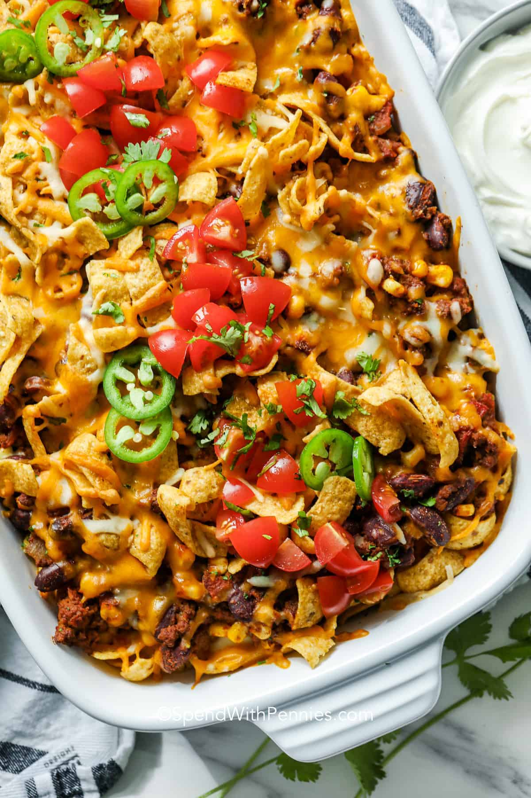

Frito Pie!

Scrumptious frito pie
throwback to what i used to eat when I was younger!
nice meal to cook for many people!
ingredients
- Ground beef
- taco seasoning
- beans
- tomatoes
- corn
- fritos
- cheese
steps
- Brown beef and season with a packet of taco seasoning. Stir in remaining filling ingredients.
- Layer Fritos, cheese, and the meat mixture in a casserole dish per the recipe below.
- Top with more cheese and bake until bubbly
- Serve and enjoy… and dont forget the toppings!
homepage